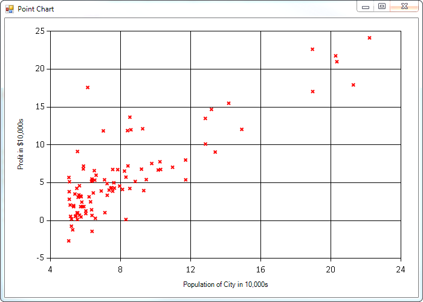

Data Science tools in F# through univariante linear regression
This post is part of the F# Advent Calendar in English 2015. Be sure to check out the other posts!
Machine Learning is very interesting and inspiring filed. I've been interested in this topic for several years now, mainly focusing on theory (although I was able to implement a poor recommeder system for my startup) and having a little experience from the real-world problems. But several months ago I started a real hardcore learning in Machine Learning, reading many books and following almost every course on Coursera and other MOOC portals. I know that those courses are aimed towards the newcomers like me and don't give you a solid knowledge as if you had a PhD in the field. However with a lot of practice, you can do many usefull things.
However, every time I read a book or follow a machine learning course, the tools and languages that are used are most often R and Python and their powerful set of packages and easy to use environments. This is for obvious reasons like historical reasons and because of the rich packages the comunity has built over the years that you can chose from to prototype very quickly and to explore the data.
I want to check what kind of tools are available to my prefered language at the moment which is F# of course.
FsLab : the best place to start
If you follow the top F# folks you've certainly heard about the fslab.org. To quote from the FSlab
FsLab is a collection of libraries for data-science. It provides a rapid development environment that lets you write advanced analysis with a few lines of production-quality code.
FsLab has many interesting libraries for data-science and the whole process of working with data. It encompasses data access, calulations, charting and producing final reports. You can even integrate R language through the data provider.This is very interesting.
For my problem at hand I don't need the whole FsLab package. What I want to is to pick whatever library I need. My additional constraint is to make it work on OSX and mono.
Part 1: Linear regression with one variable
This sample is taken from the famous Machine Learning course from Stanford University on Coursera. The is the week 2 assignement on linear regression. I took this course because I already know the results of the exercice so it will be easy for me to check against it my F# implementation. You don't need to be aware about machine learning because I'm more focused on libraries I use to achieve my goal rather then explaining the theory.
The problem
The problem for the assignement is as follows. Suppose you are the CEO of a restaurant franchise and are considering different cities for opening a new outlet. The chain already has trucks in various cities and you have data for profits and populations from the cities. We will need this data to help you select which city to expand to next.
The training data is contained in the data.csv file. The first column is the population of a city and the second column is the profit of a food truck in that city. A negative value for profit indicates a loss. So we can have values like that:
1: 2: 3: 4: 5: |
|
Data visualisation
Before starting on any task, it is often useful to understand the data by visualizing it. We can use a scatter plot to visualize the data, since it has only two properties to plot (profit and population). Many real-world problems are multi-dimentional and cannot be plotted on a 2-d plot. But for our simple problem at hand it will be enough.
What i need is a library that allow me to plot. I would like to use it on OSX and from F# interactive. This is important because it allows me to easily propotype and explore my data.
My first choice was FSharp.Charting. It has been around since some time and it has all powerful features. There is also a package FSharp.Charting.Gtk to make it work on OSX with GTK. Unfortunatelly after spending few hours on trying to install gtk-sharp on my machine I gave up. I was able to display the form but instead of visualizing the plot it was empty.
My second choice was the other nice package for charting XPlot. This is based on GoogleCharts and Plotly. Very nice features, I was also able to use it from F# interactive with Suave.Io support. However it cannot combine plots (scatter and line for example). I will need this for my future post so I go back to FSharp.Charting and Windows until I fix my gtk-sharp issue on mac.
This is the scatter plot for my training data:

So this looks pretty well! The code for generating the scatter plot is really simple:
1: 2: 3: 4: |
|
It is really strightforward. You can customize titles, markers' styles, axis scales, etc. A great tool accessible from inside the F# interactive.
But before we could plot we had to get the data points from somewhere.
Reading data
I could read data points passed to the scatter plot using standard .NET IO functions. But there is a better way. I took Math.NET Numerics for calculations that follows in the next part. This excellent library already knows how to read data from .csv file:
1: 2: 3: 4: 5: |
|
And that's it. It reads the content on my file and builds up a matrix. All that I want. All I need to do is the final transformation to points I pass to the chart:
1: 2: 3: |
|
Math.NET numerics has already all the features that enable to transform the data to the column array ToColumnWiseArray().
Calculating the cost function
The objective of linear regression is to minimize the cost function:
\[J(\theta_0, \theta_1) = \dfrac {1}{2m} \displaystyle \sum _{i=1}^m \left (h_\theta (x_{i}) - y_{i} \right)^2\]
where the hypothesis \(h_\theta (x)\) is given by the linear model:
\[h_\theta(x) = \theta_0 + \theta_1 x\]
The cost function measures the accuracy of our hypothesis. This takes an average (actually a fancier version of an average) of all the results of the hypothesis with inputs from x's compared to the actual output y's
For this task I need a powerfull library that will allow me to work with vectors and matrices. All the \(\theta\) parameter should be updated at once and using matrices is very strighforward instead of loops. Math.NET Numerics library is an excellent choice. It works well on mono and mac too.
To calculate the cost function j we can simply do this:
1: 2: 3: 4: 5: 6: 7: |
|
What the calculation does it's not important. It's just the implementation of the formula above. Look how easy is to do any operation on vectors and matrices. Multiplying them, substracting and transforming is very easy with Math.NET Numerics. Although the code is not idiomatic to F#, it's pretty readable. Imagine what you would need to do if you would like to use loops for example and make a calculation for every training example instead of manipulating vectors and matrices.
The cost function returns the correct result.
And that's all for this first part.
Summary
F# is a great language for prototyping and exploring data. The community has built many tools that allows this smooth experience. I will investigate on the only little problem I had on Mac with FSharp.Charting.
If you know how to write more idiomatic F# code with either of thses libraries, please leave a comment.
This is the first part of implementing the linear regression with one variable. In the next post I'll implement the gradient descent part and predictions with these two libraries. Stay tuned
val double : value:'T -> double (requires member op_Explicit)
Full name: Microsoft.FSharp.Core.ExtraTopLevelOperators.double
--------------------
type double = System.Double
Full name: Microsoft.FSharp.Core.double
from Microsoft.FSharp.Collections
Full name: Microsoft.FSharp.Collections.Array.zip
from Microsoft.FSharp.Collections
Full name: Microsoft.FSharp.Collections.Seq.ofArray